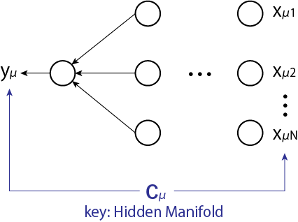

機械学習 (Machine Learning)
教師あり学習 (Supervised learning)
まず、入出力関係を定義しましょう。
ここでは入力(Input)、は出力(Output)です。例えば、入力が画像データ、出力がその画像に写っている動物とすると、この関数は動物を判定するための関数であることがわかります。この分類を機械に任せたいというのが、機械学習の目標です。言い換えれば、関数を真似した人工的な関数を作ることが目標となります。
関数を真似するためにを様々変化させることを、機械学習で行います。しかし真のはわからないので、その指標として入力と出力の結果(やその関係性)を用います。真似るための指標(教師)として、データセットを最初に提供します。
Loss function (error, 損失関数、誤差関数)
機械学習の結果が間違っているかどうかを、人間側が指導する必要があります。これをLoss functionと呼びます。これには決まった定義はなく、最終的に答えを出す人間が適切に決定します。例として、以下のようなものがあります。
データセットとして与えられている答えと機械が予測した結果の差を全ての添字に対して和を撮ったものが、最小になるように関数を最適化することが、機械学習の目標となります。関数は皆目見当がつかないものですが、とりあえずをモデルとして用意して後から結果に合うようにを合わせます。
変える余地のある(パラメータを多数持つような)関数を最適化するのが深層学習です。厳密な物理・数学の世界からみたら愚の骨頂？
深層学習を用いて問題を解くことで、我々は賢くなったのでしょうか？答えは否。ただし深層学習を用いて出てきた結果を考察することで次のステップに行くことができます。どんな関数なら上手くいくのかを解析することもできるでしょう。これはデータサイエンス研究手法の新しい形です。
上述のように、機械学習は1. を定義する、2. Loss functionを定義する、3. 最適化する、という手順で行います。
Perceptron (パーセプトロン)
最初のstepとして、パーセプトロンを考えましょう。これは統計力学におけるIsing modelのように、機械学習や人工知能におけるトイモデルとして広く知られています。
を真似るものとして
を考えます。これは以下のように入力層と出力層で図示することができます。
機械学習で行っているのは入力データに対して線形変換と非線形変換を繰り返しです。これにより複雑な関数を形成することができます。
次に(4.5), (4.6)式がどれくらい似ているかを決めましょう。一例として、以下のようなものが考えられます。
の符号との符号が一致していれば良いので、これの和にマイナスをつけたものが最小となるように最適化すれば良いことがわかります。
これを見てわかるように、このLoss functionは物理学で言うところのエネルギーと見なすことができます。は物理系の自由度を表現していると言えるでしょう。その意味では機械学習の系を最適化することは、我々のコンピュータを冷凍機としてその人工的な系のエネルギーを最小化することと同義です。このような理由から低温物理学や統計物理学とのアナロジーが使えることがわかります。
同様の考え方から、量子機械学習を考えるのは至極当然の流れと言えるでしょう。
Statistical Mechanics
以下では単純に入力データがガウス分布に従うとしましょう。
ここではベクトルの成分の数、はデータの数です。そして、は{-1, 1}の分布しか持たないような分布を考えます。
今、考えているのは(4.7)式のように大きさを考えない系なので、のように規格化されているものとして以降の計算を行います。すると分配関数は
を固定した(quench randomnesした)元でについて最適化することを考えます(は教師データなので予め与えられたものであることから)。するとは固定されたスピンと考えることができるので、これはスピングラスの理論(レプリカ法)で計算を進めることができます。
このような系はquenched系ですが、y, w, xが全て同時に動く場合にはannealed系です。前者はデータを与えきった後に学習を行う「オフライン学習」、後者はデータを与えるたびに
ではレプリカ法を用いて計算を行っていきましょう。
property
ここでを定義します。この変数が従う確率分布を計算してみましょう。
の肩を計算しましょう。
より、(4.12)式はでの積分が実行できて
ここではこの系のスピングラス秩序パラメータ、はその行列です。(4.13)式の形から、は平均0、分散のガウス分布に従うことがわかります。これは中心極限定理と同じ形です。
Equivalence representation
等価定理による表現は以下のようなものでした。
これより
このようにすることでの積分との積分に分けることができます。するとの部分は、これまで計算してきたものと同じくエントロピーを表しているとわかります。これまでの計算と違いが現れているのはの部分のみです。エネルギーの部分を、エントロピー部分をとおくと
となります。
エネルギーの計算
それではエネルギーの計算を進めていきましょう。
ここでの平均が0, 分散がということと、レプリカ対称性
よりと表現することができます。ここでは(0,1)のガウス分布に従う変数です。すると
となります。よってをで書き換えましょう。
乗はの場合の計算が全て一致することから出てきます。
機械学習の一般形として、エネルギーをと書くことができます。これは線形変換と非線形変換を施した形になっているため、これが一般形になっていることがわかります。これまでの議論からと書け、これはさらに等価定理でで表現することができます...という議論の進め方を(公式のように)覚えてしまえば、あとは手を動かすだけで研究ができます。
(4.18)式の変形をさらに進めます。
の中を整理しましょう。被積分関数の中にsignがあるので、場合分けが必要です。
相補誤差関数
を用いると
より
となります。以上より
ここでです。
エントロピーの計算
残りのエントロピーの計算を行いましょう。
の肩の部分を整理すると
最後の項を整理すると
このの部分にHubbard-Stratonovich変換をしてとすると
上式においての部分でガウス積分を実行するととなります。計算していくと
エントロピーに鞍点法を適用
以上より
という恒等式を得ます。
エネルギーに鞍点法を適用
(4.21)式よりエネルギーは以下のように書けたのでした。
ここでです。logの中身をと定義すると、エントロピー項からが出てくることを合わせて
ここで
を用いると
(4.30), (4.32)式より
これはについての自己無撞着方程式になっています。この式においてを考えましょう。するとより
となります。極限のを横軸で図示すると以下のようになります。
この図の再現ができない...どこかで計算ミス？それとも作成したスクリプトのアルゴリズムの問題？
この図から、でスピン秩序パラメータがに凍結することを表しています。ここでです。この意味を考えるために、2種類のデータを分類することを考えましょう。より、はデータの数に比例しています。これが大きいとデータ分類の境界線がある狭い領域にのみ現れるようになり、同じ答えしか出せなくなります。これはパーセプトロンの性能限界を表していることがわかります。
Hidden Manifold Model (arXiv: 2002.09339)
これまで行ってきた計算には実は大問題があります。
古典的なモデル
入力データがガウス分布に従っているとして
さらに出力は
のように、教師モデルを模倣して生徒もモデルを考えます。これは古典的なモデルとして、1990年代にたくさん計算されました。
現実的なモデル
しかし、現実は異なります。古典的な方法論に従って、複雑なモデルがたくさん生み出されました。しかし、それはこの機械学習の本質ではなく、これは現実を表すための重要な側面とは言えませんでした。重要なのはデータです。これまでの計算で用いられてきたランダムな分布のデータというものは本来ありえません(例えば、猫の画像は猫の構造を持っており、その時点でランダムではありません)。
は何かしらの相関を持っており、そのような関係性がないデータを学習しても意味がありません。Hidden Manifold Modelとはが何かしらの鍵を用いて生成されていると考えます。

簡単なものとして以下のようなものがあります。入力は
そして出力は、入力と相関する形として
本質的なものは深い複雑な構造にあるのではなくて、データの相関にあるということを覚えておきましょう。
機械学習が上手くその性能を発揮しない背景には、入力と出力の相関が無いようなデータを持ってきていることが挙げられます。深層学習の構造はどのような関数も近似できる(Universal approximator)ので、原理的にはどのような問題も最適化できるはずです。
Statistical Mechanics
以降の文章は未完です。そのうち、授業で紹介された論文を読みつつ式を追います。
(4.34), (4.35)から分配関数を計算します。
ここでエネルギー部分に
のように余分な項を付け足すことで過適合(overfitting)を避けます。レプリカ法を用いて
この計算においてはもとの内積になっているので、注意が必要です。ここではGaussian Equivalent Theorem(GET)という計算テクニックを用います。
これから
ここでなどです。
Appendix 1: の系
以前の講義ではquenched系、のannealed系に対応すると学びました。しかし、の系も存在します。これをpartial annealed系と呼びます。どちらの変数も動くが、動くスピードが違う(ゆっくり動く)とイメージできます。データを変えながら最適化を行う場合には、このような中途半端なの値の系が実際の機械学習の系ではないかとされています。
Appendix 2: レプリカ法のアプリケーション例
量子アニーリングを用いて最適化問題を解く(イジングの基底状態を求める)という応用例があることから、量子ゆらぎの計算を導入します。その時の計算方法にレプリカ法が用いられます。最近ではAdS/CFT対応の文脈でもレプリカ法が用いられており、論文数が増えていると言われています。